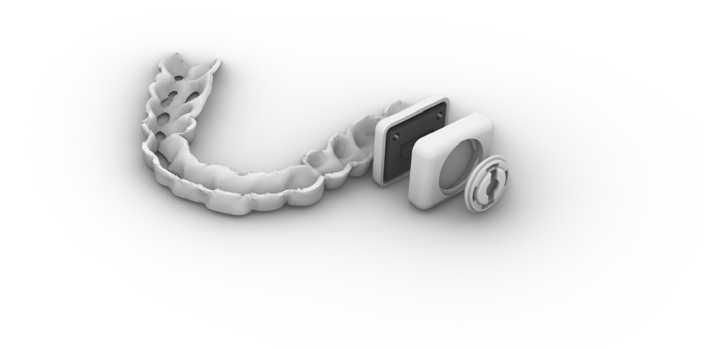
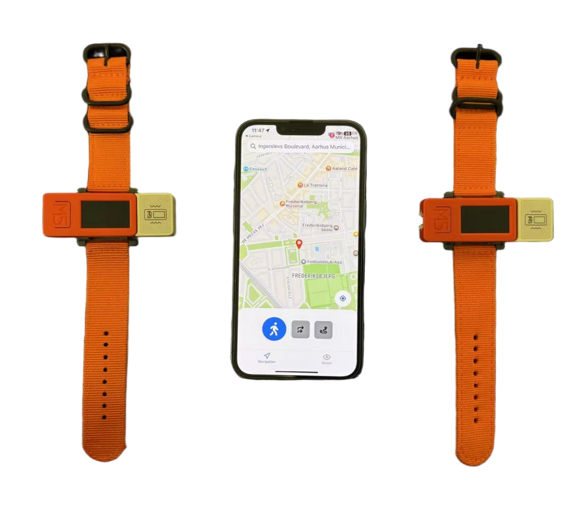

Master's Research Projects
Dynamic Crossmodal Mappings
Supervisor: Dr. Oussama Metatla | University of Bristol
Jan 2026 - Present
Designed and fabricated a pneumatically actuated soft shape-changing device. Investigated how dynamic shape-change influences crossmodal mappings to visual color dimensions.
SmartPrompt: AI-Assisted System
Supervisor: Dr. Niklas Elmqvist | Aarhus University
Jan 2025 - May 2025
An interactive Human-AI system utilizing real-time NLP and explainable radar charts to reduce cognitive load and minimize trial-and-error during prompt engineering.

BIOral: Modular Intraoral Interfaces
Supervisor: Dr. Michael Wessely | Aarhus University
Oct 2024 - Apr 2025
Developed a modular intraoral bio-interactive interface enabling continuous saliva biomarker sensing and on-demand drug delivery via colorimetric processing.

VisionNav: IoT Navigation Companion
Supervisor: Dr. Niels Olof Bouvin | Aarhus University
Oct 2024 - Dec 2024
Engineered a non-visual, haptic-based IoT navigation assistant integrating smartphone computer vision, MQTT messaging, and dual haptic actuators.
Bachelor's Research Projects
Anomalies and Data Deviation Value Judgment Model Based on ECG Data
Apr 2023 - Jun 2023Research Intern | Supervised by Dr. Yue Zhao | Northwestern Polytechnical University
Developed an anomaly detection framework for large-scale multi-lead ECG data, leveraging signal processing and unsupervised learning to identify irregular heartbeats in big data streams. Applied Dynamic Time Warping (DTW) and Local Outlier Factor (LOF) scoring to successfully isolate abnormal ECG patterns.
Wordle Word Difficulty Assessment Model via Machine Learning
Jan 2023 - Apr 2023Research Intern | Supervised by Dr. Jichao Qiao | Northwestern Polytechnical University
Designed a machine-learning model to predict Wordle puzzle difficulty by constructing a multi-output regression pipeline using a regressor chain of decision trees. Classified word difficulty using K-Means++ clustering and optimized a KNN regression model using Particle Swarm Optimization (PSO), achieving over 90% accuracy.